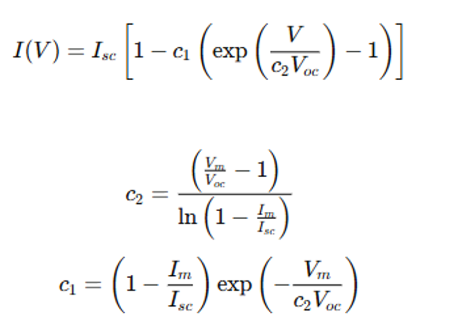
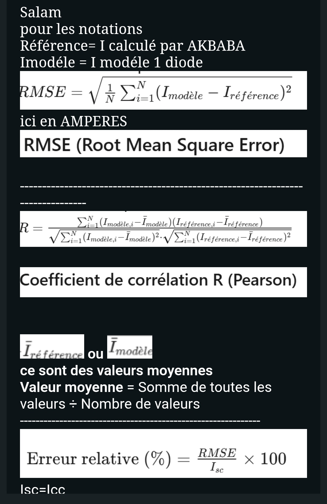
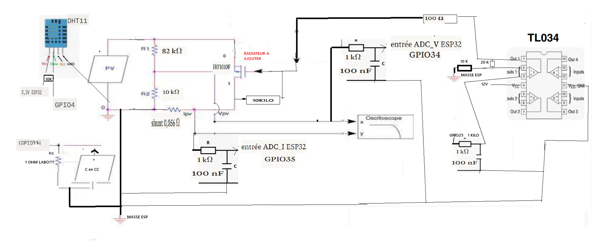
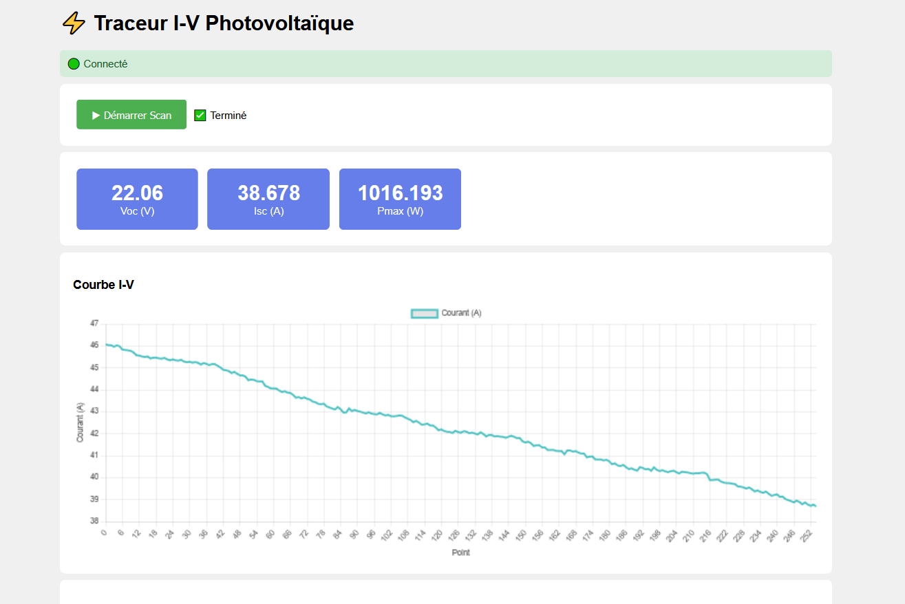
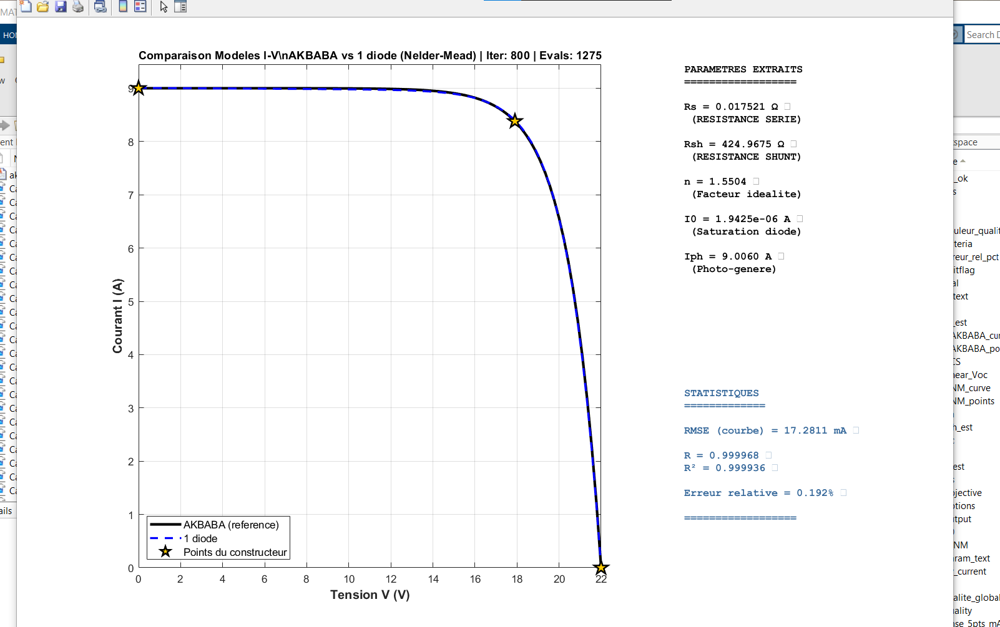

Modélisation et Caractérisation des Courbes I-V d'un Panneau Photovoltaïque via IoT
Extraction des Paramètres par Algorithmes d'Optimisation
Conception d'une carte intelligente basée sur ESP32 pour l'acquisition, la modélisation à une diode et l'extraction des paramètres électriques du panneau PV à l'aide de l'algorithme de Nelder-Mead.
Acquisition IoT
ESP32 & capteurs temps réel
Modélisation 1 Diode
Extraction paramètres Rs, Rsh, n, I₀
Optimisation
Algorithme Nelder-Mead
Introduction & Objectifs
- Les performances d'un panneau PV dépendent fortement des conditions environnementales (irradiance, température)
- Le constructeur fournit uniquement 4 grandeurs : Voc, Isc, Vopt, Iopt
- La connaissance des paramètres internes (Rs, Rsh, n, I₀, Iph) est essentielle pour la simulation et le diagnostic
- L'extraction de ces paramètres nécessite des algorithmes d'optimisation robustes
- Conception d'un traceur I-V intelligent basé sur ESP32
- Mesure expérimentale des caractéristiques I-V et P-V
- Modélisation du panneau par le modèle à 1 diode
- Extraction des 5 paramètres inconnus par algorithme d'optimisation Nelder-Mead
- Validation du modèle par indicateurs statistiques (RMSE, R, R²)
- Transmission des données via MQTT vers une interface web
Modélisation & Algorithmes d'Optimisation
Le courant du panneau est modélisé par :

Le modèle utilise les 4 points constructeur (Voc, Isc, Vopt, Iopt) pour déterminer les coefficients.

Algorithme de Nelder-Mead
Méthode d'optimisation sans dérivée utilisée pour minimiser l'erreur entre le modèle et les mesures expérimentales. Elle permet d'extraire les 5 paramètres inconnus du panneau à partir des données constructeur.
Circuit Électronique de Mesure

- Pont diviseur R1=82kΩ / R2=10kΩ (rapport ~9.2)
- Entrée ADC_V sur GPIO34 (ESP32)
- Filtre RC anti-repliement (1kΩ, 100nF)
- Plage de mesure : 0 – 10.2V (Voc)
- Shunt de précision 0.056Ω pour mesure Ipv
- Amplificateur TL034 pour adaptation de niveau
- Entrée ADC_I sur GPIO35 (ESP32)
- Plage de mesure : 0 – 3.08A (Isc)
Architecture IoT & Interface Web
- Couche Physique : Panneau PV + Charge variable (MOSFET)
- Acquisition : ESP32 avec ADC 12 bits + DAC pour commande
- Communication : WiFi vers Broker MQTT (10.35.4.100:1883)
- Topics MQTT :
pv/iv(données CSV),pv/params(paramètres) - Visualisation : Interface web temps réel sur PC/Smartphone
PV
ESP32
MQTT
Web

Interface responsive accessible depuis PC, tablette et smartphone.
Résultats Expérimentaux
Irradiance : 1000 W/m²
Paramètres Extraits & Validation du Modèle

Conclusion Validation
Une erreur relative de 0.192% et un R² > 0.999 prouvent que le modèle à 1 diode associé à l'algorithme de Nelder-Mead reproduit fidèlement le comportement réel du panneau.
Conclusion & Perspectives
- Conception et réalisation d'un traceur I-V intelligent basé sur ESP32
- Mesure précise des caractéristiques électriques du panneau PV
- Modélisation réussie par le modèle à 1 diode
- Extraction des 5 paramètres internes par algorithme d'optimisation Nelder-Mead
- Validation avec une erreur relative de 0.192% et R² = 0.9999
- Transmission IoT via MQTT et interface web responsive
- Intégration d'un algorithme de suivi du point de puissance maximale (P&O ou IncCond) basé sur les paramètres extraits
- Amélioration de la précision par ajout d'une sonde de température PT100
- Développement d'une application mobile dédiée
- Extension à un champ de plusieurs panneaux (monitoring centralisé)
- Intelligence artificielle pour le diagnostic prédictif des dégradations
Merci pour votre attention
Questions & Discussions